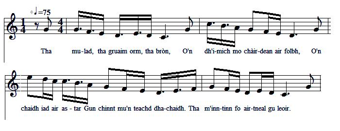

Oran air Là Sliabh an t-Siorraim - Song on the Day of Sherrifmuir
Chant sur la journée de Sherrifmuir (13 Novembre 1715)
Le Sìleas Nic Dhomnail na Ceapaich - by Silis McDonald of Keppoch [1]
From "BARDACHD GHAIDHLIG" pp 125-128, (Second Edition), "Specimens of Gaelic Poetry" by William J. Watson, Sterling, 1932(archive.org/stream/bardachdghaidhli00wats#page/124/mode/2up)
Tune - Mélodie
"Here's to the Year that's away"
as sung by Rev. William Matheson
(www.tobarandualchais.co.uk/en/fullrecord/14826/6 Là Sliabh an t-Siorraim)
Sequenced by Christian Souchon (c) 2010

Other versions of this Bacchanalian tune

|
SONG TO THE DAY OF SHERRIFMUIR
1. I feel sad and of joy bereaved About my friends who are to leave, About their departure. I doubt if they'll ever Return, as I ought to believe! 2. O may the good news soothe my mind That they were rewarded in kind: With the crown of England For the rightful king and That none of them was left behind. 3. Donald of Sleat [2], farewell to you, Your brothers, William and James, too It's time you warned your clan You shall lead in the van It's time your fame be hailed anew! 4. Grey-haired Alexander [3], good speed! Come and partake in the great deed! The hour has come for blows To hail down on your foes And for many a wound to bleed! 5. And farewell, Alan of the Bay [4] Who are now from France on your way. Your heirloom of bravery You'll increase gallantly: With laurels your blade pruned in the fray. 6. Farewell also to the hero, My brother, Colla of Keppoch [5], Brae-Lochaber's leader To whom my kin gather, Have success in hunting the foe! 7. Who saw ever such hardy band? Seaforth, Lovat, MacLeod and MacKinnon of Strathland [6] And Chisholm the Gallant: Who could the Scots Lion withstand! 8. Cock a-doodle-do! The Cock [7] grips Astute fighters over the hips. Victory they won't gain: Their heads they hide in vain. No sigh for them should pass your lips! 9. Your comb, your throat, brave cock, be thrilled! The North Army's old cry sound shrill! Now spur on your horses, Rip and beat their forces, Till you make surrender Argyll [8]! 10. Lord Robertson [9], make your horse prance! For so long time waiting in France, Blow your pipe, lift your flag: It's time to hunt the stag, To send home the Campbells you'll chance. 11. King, be grateful to Lord of Mar Who called loyal men, near and far, To rise, and these stalwart Lords unfurled your standard, That might shine again James's star. 12. Yonder troops [10] will put to an end My gloom, or with joyfulness blend! May my mind know for sure The Scots Lion will cure Hardship that Wigh rule on us sent! 13. You were the torrent in full spate. Atop the hill now you prostrate. The pulpit is a hob Watched over by the mob. Bishops [11] yield to the Beast of hate. 14. McPherson [12], with anger you seethe Whose grey locks with laurels are wreathed; I still don't see or hear That you soon will be here Though your clan have their swords unsheathed. 15. It's time for those of any age Who're burning the Whigs to engage, Who're glad in either land, In Scotland or England, To cut them off like some cabbage. 16. O may the prophecy occur As made by Thomas the Rhymer [13]: The crossing by bowmen Of the Bridge in thousands, While all London clocks strike the hour! Translated by Christian Souchon (c) 2015 |
ORAN AIR LA SLIABH AN T-SIORRAIM
1. Tha mulad, tha gruaim orm, tha bròn, O'n dh'imich mo chàirdean air folbh, O'n chaidh iad air astar Gun chinnt mu'n teachd dhachaidh. Tha m'inntinn fo airtneal gu leoir. 2. Mo ghuidhe gun cluinnear sgeul binn Mu'n bhuidhinn a dh'imich o'n tìr; Gun crùn sibh an Sasunn An righ dligheach le 'r gaisge, Is gum pillear leibh dhachaidh gun dìth. 3. Beir soraidh gu Domhnall o'n Dùn, [2] Gu h-Uilleam 's gu Seumas 'nan triuir; An uair a chruinnicheas uaislean De d' chinneadh mun cuairt duit, Glac an t-urram a fhuair thu le cliù. 4. Beir soraidh gu h-Alasdair Liath: [3] As do chruadal gun earbainn deagh ghniomh: An uair a thèid thu gu buillean Is do nàimhdean a dh'fhuireach, Gu cinnteach bidh fuil air am bian. 5. Beir soraidh gu h-Ailean o'n Chuan [4] Bha greis anns an Fhraing uainn air chuairt; Is e ro mheud do ghaisge Chum gun oighre air do phearsa, Craobh-chosgairt air feachd nan arm cruaidh. 6. Beir soraidh an deaghaidh nan laoch A dh'imich o Cheapaich mo ghaoil, [5] Gu ceannard a' Bhràghad Is a' chuid eile de m' chàirdean: Buaidh shìthne is buaidh làrach leibh chaoidh. 7. Tha ùrachadh buidheann tighinn oirnn, MacCoinnich, MacShimidh 's MacLeoid, MacFhionghuin Srath Chuailte [6] Is an Siosalach suairce : Is e mo bharail gum buailear leo stròic. 8. Gig gig, thuirt an Coileach [7]'s e an sàs, Tha mo sgoileirean ullamh gu blàr, Am firididh nach coisinn: Cuiribh a cheann anns a' phoca, Is chan fhiù dhuinn bhith 'g osnaich m'a bhàs. 9. Crath do chìrein do choileir's do chluas, Cuir sgairt ort ri feachd an taobh tuath; Cuir spuir ort 's bi gleusda Gu do nàimhdean a reubadh, Is cuir MacCailein [8] fo ghèill mar bu dual. 10. Thighearna Shrùthain o Ghiùthsaich [9] nam beann, Thug thu tamull a' feitheamh 'san Fhraing, Tog do phìob is do bhratach: So an t-àm dhuit bhi sgairteil, Is cuir na Caimbeulaich dhachaidh 'n an deann. 11. Righ, is buidheach mi Mhoirear sin Marr, Leis a dh'eireadh a' bhuidheann gun fheall ; A liuthad Foirbeiseach gasda Tha ag iadhadh m'a bhrataich ; B'fhiach do Sheumas an glacadh air làimh. 12. Tha mo ghruaim ris a' bhuidhinn ud thall [10]. A luaithead 's a mhùth iad an t-sreang; Tha mi cinnteach am aigne Gum bu mhiann leo bhith againn, Mur bhi Chuigse bhith aca mar cheann. 13. Far an robh sibh ri peideachas riamh, Is cha b'ann ag osnaich air mullach nan sliabh : A liuthad cùbaid tha an dràsda Fo chùram na gràisge, Agus easbuig fo àilgheas nam biasd. [11] 14. A Dhonnchaidh [12], ma dh'imich thu null, Tha do chiabhan air glasadh fo cliù ; Gun cluinneam 's gu faiceam Do philleadh-sa dhachaidh, Is do chinneadh cha stad air do chùl. 15. An uair a ruigeas sibh cuide-ri càch, Ciamar chumas a' Chuigse ruibh blàr' C'ait' a bheil e fear aca An Albainn no an Sasunn Nach gearradh sibh as mar an càl? 16. An uair a ruigeas sibh Lunnainn nan cleòc, Is a bheir sibh an fhàistinneachd [13] beò, Bidh sibh Tomhas an t-Sìoda Le bhur boghachan rìomhach, Air an drochaid is mìltean fo 'r sgòd. |
CHANT SUR LA JOURNEE DE SHERRIFUIR
1. Je suis triste, hélas et j'ai peur Pour ceux qui sont chers à mon cœur Et prennent la route Tandis que je doute Appréhendant quelque malheur. 2. Puissions-nous vite être informés Qu'ils reviennent au grand complet Et que nous rendîmes Au roi légitime Sa couronne, un brillant succès. 3. Bonne chance à Donald de Sleat [2] A Guillaume et Jacques aussi, Tandis que s'assemble Votre clan et tremble, Entendant ces noms, l'ennemi. 4. Alexandre de Glengarry [3] Que l'âge n'a point assagi Veut si l'on ferraille Sa part de bataille. Il versera le sang, c'est dit! 5. Salut, Alain de Clanranald! [4] Tu franchis, dit-on, le Canal. A ton héritage De hauts faits, ta page Manquait et ton épée l'écrit. 6. Salut à toi, jeune héros, Mon frère, Colla de Keppoch, [5] Qui guides les hommes De Loch-Aber. Comme Tous mes parents, reviens bientôt! 7. Le vaillant groupe que voilà: Seaforth, MacLeod, Lord Lovat, Ainsi que MacKinnon [6] Et le noble Chisholm: Le Lion d'Ecosse rugira. 8. Cocorico, le Coq du Nord [7] Va planter ses griffes encor: Après l'arrogance, La désespérance. A quoi bon pleurer sur vos morts? 9. Secouons nos crêtes et crions, Nous les coqs du Septentrion! Sellons nos montures! Forçons l'imposture Et Argyle [8] à la reddition! 10. Lord Struan [9] attend ce moment En France depuis bien longtemps: Sonneurs, oriflammes, Approchent et clament Que les Campbell lèvent le camp. 11. Sire, vous le devez à Mar Qui déploya votre étendard Et tous ces fidèles Débordant de zèle Venus vous aider sans retard. 12. D'autres là-bas [10] vont apaiser Mon esprit, le rasséréner: Par le Lion d'Ecosse Parfois si féroce, Les Whigs vont être terrassés! 13. Jadis impétueux torrent, Vous pleurez sur les monts, pendant Que prêchent en chaire Quelques pauvres hères; L'évêque [11] est en butte aux méchants. 14. Duncan MacPherson [12], on t'attend: Ces lauriers, sur tes cheveux blancs, De peur qu'ils jaunissent, Il faut que tu hisses La voile et rejoignes ton clan. 15. Ces héros, et d'autres encor, Voudront chasser les Whigs dehors: Ecosse, Angleterre, Partout il faut faire Pour vaincre cet ultime effort. 16. Et qu'à Londres les carillons Sonnent au passage du Pont Par nos compagnies: C'est la prophétie De Thomas le Rimeur [13], dit-on. (Trad. Christian Souchon (c) 2015) |
|
[1]
Sileas Nic Dhomnail na Ceapaich
(Silis McDonald of Keppoch): see
Alexander of Glengarry
.
She composed this song of incitement to the clans at the time of the Battle of Sheriffmuir. The poetess is sad to see her clan leave for battle but wishes them well in London and hopes that they may crown the rightful king while they are there. [2] Domhnaìl o'n Dùn : Sir Donald Macdonald of Sleat, "Domhnall a' Chogaidh." He took part in the campaign of 1689, and in the rising of 1715, his estates were forfeited, and he died in 1718. William and James were his brothers. [3] Alasdair liath : Alasdair Dubh, Alexander of Glengarry, who led the Glengarry men at Killiecrankie. He became chief in 1694, fought at Sheriffmuir, and died in 1721. see Alexander of Glengarry . [4] Ailean o' n Chuan (Allan of the Bay): Allan of Clanranald , who was mortally wounded at Sheriffmuir, and was taken to Drummond Castle, where he died next day. He was buried at Inverpeffray. An elegy ("Och a Mhuire, mo dhunaidh!" Alas, Mary, my misfortune!) to the tune noted by Captain Simon Fraser was composed by Niall MacMhuirich (Neil McVurrich) (1630-1716) There is also an elegy on him, in the old classic style, in the "Red Book of Clanranald". [5] Cheapaich mo ghaoil : Coll Macdonald of Keppoch, brother of the poetess, joined in the rising of 1715. He is "ceannard a' Bhràghad," leader of Brae-Lochaber. He was also known as "Colla nam Bo", "Coll of the Cows". [6] MacFhionghuin Srath Chuailte : Mackinnon is usually styled "Mac Fhionghuin Srath Suardail," of Strathswordale in Skye, for which "Srath Chuailte" may be an error. [7] The Coileach is the "Cock" of the North, i.e., the Marquis of Huntly, Chief of Clan Gordon . The poet Iain Lom wrote about him: "larla Einne, ris an goirte an t-Eun Tuathach." (He was born in Enzie and had the sourness of a Nothern fowl). [8] MacCailein (-Mor): patronymic of the Chief of Campbells, here John Campbell, Duke of Argyll (1694-1743). [9] Thighearna Shrùthain o Ghiùthsaich , Lord Struan of Kingussie, Alexander Robertson of Struan (1668- 1749), the poet Chief, who- had fought at Killiecrankie. "A'Ghiùthsach" is the Black Wood of Rannoch. The Chief had a residence at Càiridh (Englished Carie), on the south side of Loch Rannoch — an Slios Garbh, (the "rough side"). [10] "A' bhuidheann ud thall" : "the troops over there". "At Auchterarder, 400 Frasers who had arrived at Perth only a few days before, and 200 of Lord Huntly's Strathdon and Glenlivet men, left Mar in a body." — (Mil. Hist. of Ferthshire, 275). The poem, it is to be noted, was composed at Beldornie, on the Upper Deveron. [11] "Easbuig fo àilgheas nam biasd" : "the bishop is to the Beast in thrall". The poetess had no love for the Presbyterians. See "Episcopalian" in the comments to Awa', Whigs, awa . [12] A Dhonnchaidh : Duncan Macpherson of Cluny "steered his way carefully through the Revolution troubles. He is very intimate with Lord Dundee; signs the address to George I.; and in his later years is only known by his hostility to the heir-male; and neither going out himself in 1715, perhaps incapacitated by age, nor suffering Nuide to do so." — (C. Fraser-Mackintosh, Antiq. Notes (Second Ser.), p. 350.) [13] Am fhàistinneachd : "the prophecy" ascribed to Thomas. the Rhymer (Thomas Learmonth of Erceldoune (Earlstone), a soothsayer and poet who lived in the 13th century) . The notes above are mostly drawn from BARDACHD GHAIDHLIG. |
[1]
Sileas Nic Dhomnail na Ceapaich
(Silis McDonald de Keppoch): cf.
Alexandre de Glengarry
.
Elle composa ce chant de propagande à l'intention des clans juste avant la bataille de Sheriffmuir. Elle s'attriste de voir son clan partir au combat, mais lui souhaite d'arriver à Londres et espère qu'il pourra couronner le roi légitime quand il y sera. [2] Domhnaìl o'n Dùn : Sir Donald Macdonald de Sleat, "Domhnall a' Chogaidh." Il prit part à la campagne de 1689 et au soulèvement de 1715. Ses terres lui furent confisquées et il mourut en 1718. William et James (Guillaume et Jacques) étaient ses frères. [3] Alasdair liath : Alasdair Dubh, Alexandre de Glengarry, était à la tête des McD de Glengarry à Killiecrankie. Il devint chef en 1694, combattit à Sheriffmuir et mourut en 1721. Cf. Alexandre de Glengarry . [4] Ailean o' n Chuan (Alain de la Baie): Alain de Clanranald , fut mortellement blessé à Sheriffmuir et transporté à Drummond Castle, où il mourut le lendemain. Il fut inhumé à Inverpeffray. Une élégie ("Och a Mhuire, mo dhunaidh!" Hélas, Marie, quel malheur que le mien!) sur la mélodie notée par le capitaine Simon Fraser fut composée par Niall MacMhuirich (Neil McVurrich) (1630-1716) Il existe une autre élégie le concernant, conforme aux anciens canons du genre, dans le manuscrit "Livre Rouge de Clanranald". [5] Cheapaich mo ghaoil : Coll Macdonald of Keppoch, le frère de la poètesse, prit part au soulèvement de 1715. Il était "ceannard a' Bhràghad," commandant de Brae-Lochaber. On l'appelait aussi "Colla nam Bo", "Coll des vaches". [6] MacFhionghuin Srath Chuailte : Mackinnon est généralement appelé "Mac Fhionghuin Srath Suardail," de Strathswordale en Skye. "Srath Chuailte" pourrait être une erreur. [7] Coileach est le "Coq du Nord", à savoir, le Marquis de Huntly, le Chef du Clan Gordon . Le poète Iain Lom écrivait à son sujet: "larla Einne, ris an goirte an t-Eun Tuathach." (Il était originaire d'Enzie et avait l'âpreté d'un oiseau boréal). [8] MacCailein (-Mor): l'appellatif du Chef des Campbell désigne, en l'occurrence John Campbell, Duc d'Argyll (1694-1743). [9] Thighearna Shrùthain o Ghiùthsaich , Lord Struan de Kingussie, Alexandre Robertson de Struan (1668- 1749), le Chef poète, qui avait combattu à Killiecrankie. "A'Ghiùthsach" désigne la "Forêt Noire" de Rannoch. Le Chef avait sa résidence à Càiridh (en anglais, "Carie"), sur la rive sud du Loch Rannoch — an Slios Garbh, (le "rive sauvage"). [10] "A' bhuidheann ud thall" : "les troupes là-bas". "A Auchterarder, 400 Fraser qui étaient arrivés à Perth seulement quelques jours plus tôt, et 200 hommes de Lord Huntly venant de Strathdon et Glenlivet, constituèrent une régiment et s'éloignèrent de Braemar." — (Histoire militaire du Ferthshire, 275). Il faut noter que le poème fut composé à Beldornie, sur le cours supérieur du Deveron. [11] "Easbuig fo àilgheas nam biasd" : "l'évêque est sous la coupe de la Bête". Visiblement, la poétesse n'aimait guère les presbytériens. Cf. "Episcopaliens" dans les commentaires de Awa', Whigs, awa . [12] A Dhonnchaidh : Duncan Macpherson de Cluny "mena prudemment sa barque lors de la "Glorieuse Révolution". C'était l'ami intime de Lord Dundee. Il fut signataire de l'adresse à George I. Plus tard, il se fit seulement remarquer par son hostilité au Prince de Galles. Il ne prit part à aucune opération en 1715, peut-être en raison de son âge, ni n'autorisa son dauphin, Lachlan de Nuid, à le faire (Cf. Fraser-Mackintosh, "Antiq. Notes" (Seconde Série), p. 350.) [13] Am fhàistinneachd : "La prophétie" attribuée à Thomas le Rimeur (Thomas Learmonth d'Erceldoune (Earlstone), devin et poète qui vécut au 13ème siècle). Les notes ci-dessus proviennent essentiellement du BARDACHD GHAIDHLIG. |